Hadoop: HDFS, YARN & MapReduce Architecture
Module 3: Big Data & MapReduce
Session 3 · Wed Oct 14
Hadoop: HDFS, YARN & MapReduce Architecture
Recap: From “How” to “Where”
Last week gave you MapReduce — the program that processes big data, split into Map, Shuffle, and Reduce.
But every one of those tasks has to run somewhere, reading a file that has to live somewhere. Today:
- HDFS — the file system that stores the data
- YARN — the software that decides which machine runs which task
These are the two real pieces underneath what Lab 4 only simulated in local mode, and what Lab 5 runs for real this Friday.
Why Not Just a Regular File System?
A regular file system — the one on your laptop — lives on one machine’s one disk.
- Its size is capped by that one disk, no matter how the data grows.
- If that disk fails, everything on it is gone — nothing to fall back on.
- All reading goes through that one machine and its one disk — no way to spread the reading work across many machines.
HDFS (Hadoop Distributed File System) splits a file into pieces and spreads those pieces — plus duplicate copies — across many machines’ disks. The file can now be bigger than any single disk, survives a disk failure, and can be read by many machines at once. It’s the same scaling out idea from last Wednesday, now applied to storage.
HDFS Blocks + Replication
- HDFS splits a file into fixed-size blocks (default 128 MB) — a large file becomes many blocks, scattered across many machines.
- Each block is stored on 3 machines, not one (replication factor = 3).
- Kitchen picture: stocking the same popular ingredient at 3 different branches, so one branch’s fridge breaking down doesn’t mean the company runs out.
ratings.csv (say, 500 MB) → 4 blocks: three full 128 MB blocks + one 116 MB block
Block 1 → stored on Machine A, Machine C, Machine E
Block 2 → stored on Machine B, Machine D, Machine A
Block 3 → stored on Machine C, Machine E, Machine B
Block 4 → stored on Machine D, Machine A, Machine CEach block’s 3 copies are on 3 different machines. (The last block only uses as much disk as it needs.)
This is a first, simpler taste of replication. Module 5 covers the full version: why 3 copies, keeping copies consistent, and what happens when one goes stale. For now: 3 copies, automatic, so no single block is a single point of failure.
On our classroom server
The classroom Hadoop cluster is one machine, so it’s configured with replication factor 1 — there’s nowhere else to put a second copy. In Lab 5, hdfs dfs -ls will show 1 where a real cluster shows 3.
HDFS Architecture: The Address Book, Again
Module 2 gave you DNS: the internet’s address book, translating a name into an address before your browser could connect. HDFS has the same shape of problem — given a filename, which machines hold its blocks?
- The NameNode is HDFS’s address book: it tracks which blocks belong to which file, and which machines hold each block. It does not store any file data itself.
- DataNodes are the machines that store the real block data.
Reading a file from HDFS
![A Client box on the left, a NameNode box labeled "(address book)" at the top, and four DataNode boxes labeled A, B, C, D on the right. Step 1: an arrow from the Client to the NameNode labeled "1. Where are the blocks of ratings.csv?". Step 2: a dashed arrow back from the NameNode to the Client labeled "2. Block 1: A, C, E; Block 2: B, D, A ...". Step 3: two thick arrows go from the Client straight to DataNode A and DataNode B, bypassing the NameNode, labeled "3. Read block data directly". Caption: "Ask the address book, then go straight to the data. The NameNode never touches the file's bytes."](diags/03-hdfs-read.svg)
The client reads blocks directly from the DataNodes. The NameNode only answers the lookup.
Reading a file from HDFS, step by step

HDFS Commands Demo
hdfs dfs -put ratings.csv /user/alice/ # upload: local file → HDFS
hdfs dfs -ls /user/alice/ # list files in an HDFS directory
hdfs dfs -cat /user/alice/ratings.csv # read a file's contents
hdfs dfs -get /user/alice/ratings.csv . # download: HDFS → local file-putand-getare opposites: local → HDFS, and HDFS → local.-lsand-catmirror the everyday Unix commands, just pointed at HDFS instead of your disk.- This
-putis the literal first step of Week 1’s pipeline diagram — Lab 10 has you run it onratings.csvandmovies.csvfor the capstone.
In the labs, replace alice with your own username: /user/<your-username>/.
What the output looks like
$ hdfs dfs -ls /user/alice/
Found 1 items
-rw-r--r-- 3 alice supergroup 2483723 2026-10-14 10:02 /user/alice/ratings.csv- The
3is the file’s replication factor (on the classroom server you’ll see1). 2483723is the size in bytes (about 2.4 MB — the MovieLens sample you’ll use in the capstone).
$ hdfs dfs -cat /user/alice/ratings.csv | head -4
userId,movieId,rating,timestamp
1,1,4.0,964982703
1,3,4.0,964981247
1,6,4.0,964982224-cat prints the whole file; piping it to head shows just the first lines.
HDFS Design Principles
- Write once, read many — files aren’t modified after writing; you write a file once, then only read it (or replace it entirely).
- Data locality — same idea as last Wednesday: map tasks run on the machine that already holds the block being processed.
- Fault tolerance — if a DataNode fails, its blocks are automatically re-replicated from the remaining copies, restoring the replication factor of 3.
- Not good for: small files (high overhead per file), low-latency access (built for throughput, not single lookups), or random writes (write once, remember).
Pause & Discuss: What Happens When a Machine Dies?
Breather — think on your own (2 min), then we discuss
You -put a 1 GB file into HDFS (128 MB blocks, replication factor 3) on a cluster with 10 DataNodes.
(a) How many blocks is the file split into? How much total disk space does it take up across the cluster?
(b) One DataNode’s disk dies. Is any part of the file lost? What does HDFS do next?
(c) Instead, the NameNode dies, and every DataNode is fine. Can you still read the file?
Answers
(a) 1024 MB ÷ 128 MB = 8 blocks. With 3 copies each, that’s 24 block copies — about 3 GB of raw disk.
(b) Nothing is lost. Every block on the dead node still has 2 copies elsewhere. HDFS notices the node has gone silent and re-replicates its blocks from the surviving copies until each is back to 3. Data is lost only if all 3 holders of the same block die before that finishes.
(c) No. Every byte is still on the DataNodes, but nothing knows which blocks make up which file, or where they are — the address book is gone. That makes a lone NameNode a single point of failure, so production clusters run a standby NameNode to take over. (Compare DNS: when it’s down, every website still exists, but you can’t find any of them.)
YARN: Who Actually Runs the Job?
HDFS answers “where does the data live.” YARN (Yet Another Resource Negotiator) answers “which machine actually runs each Map or Reduce task, and who’s keeping track?”
- ResourceManager — the branch network’s dispatcher: one per cluster, handing out room on worker machines (CPU and memory) to the jobs that need it.
- NodeManager — each branch’s on-site manager: one per worker machine, actually running the tasks assigned to that machine.
- ApplicationMaster — a coordinator for one job only: it requests room from the ResourceManager and tracks that job’s tasks across whichever workers run them.
One job, step by step
![A Client box sends an arrow labeled "1. submit job" to a ResourceManager box labeled "(one per cluster)". The ResourceManager has three arrows labeled "2. hand out room to run tasks" going down to three large boxes: "Worker 1: NodeManager", "Worker 2: NodeManager", "Worker 3: NodeManager". Worker 1 holds a yellow "ApplicationMaster (this job only)" box and one Map task. Worker 2 holds two Map tasks. Worker 3 holds one Map task and one Reduce task. Dashed lines from the ApplicationMaster connect to every task, labeled "3. tracks progress". Caption: "YARN decides WHERE tasks run. (HDFS decides where data lives.)"](diags/03-yarn.svg)
One job on YARN, step by step

A MapReduce Job in Practice
The output directory of a completed Hadoop MapReduce job:
/output/
_SUCCESS ← empty file, signals the job completed successfully
part-r-00000 ← actual output (one file per reducer)
part-r-00001 ← (if 2 reducers were used)- Hadoop never overwrites an existing output directory — it refuses to run, specifically to prevent accidental data loss. You’ll see this exact error in Lab 5 if you forget to clean up.
- Delete it yourself before re-running:
hdfs dfs -rm -r /output
From MapReduce to Spark
MapReduce already gets you scaling out for processing — but it has real limitations:
- Every job writes its intermediate results to disk, even between steps of the same pipeline — slow for anything iterative.
- The Mapper/Reducer API is low-level and verbose — hard to express a multi-step pipeline cleanly.
- No support for interactive ask-a-question-and-get-an-answer-in-seconds queries.
Spark (2009, UC Berkeley) keeps intermediate data in memory instead of writing it to disk between steps — 10–100× faster for iterative workloads. Same scaling-out idea as MapReduce; Module 4 is about doing it faster.
Lab 5 Preview
Lab 5 (this Friday, Oct 16): end-to-end Hadoop on the classroom server.
- Upload a text file to HDFS with
hdfs dfs -put - Run the Word Count MapReduce example jar
- Inspect output with
hdfs dfs -cat - Answer questions about HDFS block replication and job output structure
Quiz 3 (Module 3 — Big Data & MapReduce) runs in the last 10–15 minutes of Friday’s lab.
(EL3 — Python self-study module 2 — is due Oct 23, the day of Lab 6 and Quiz 4.)
COSC420 · Module 3 · Big Data & MapReduce